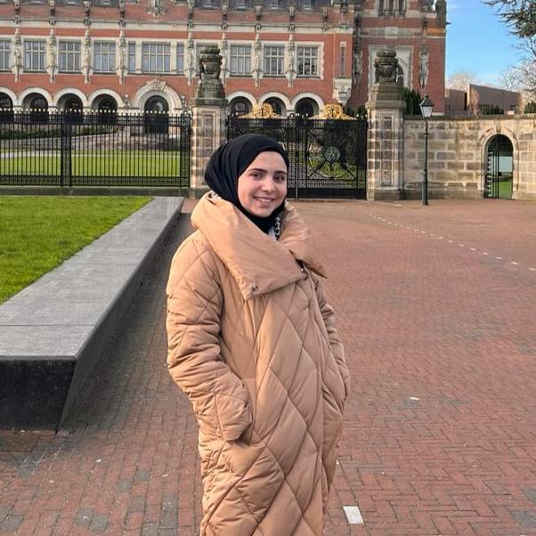

Hello, my name is Amra Hasan Sawalha, 2nd-year computer engineering student at Palestine Polytechnic University. I'm 19 years old, got 99.3 in Tawjihi, I had passion in computer engineering since I was in 10th-grade after attending a summer camp about programming principles(intoduction into c++ and html), which I barely remember right now, I've particioated in many contests throughout my school life, including ISEF, Arab Reading Challenge etc. I took a problem solving course by knowledge academy, it was so useful, and now I'm taking full stack development course by the same academy. Thank you knowledge academy for letting us dive more into software engineeering world and get out the best version of our selves!
Contact Info
Click here